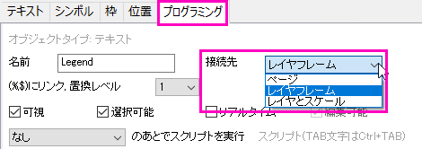
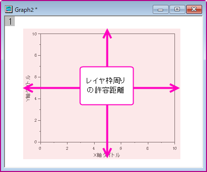

オブジェクトの添付とスケール
Attachment-Scaling-Object
テキストまたは図形オブジェクトをOriginウィンドウに追加すると、そのオブジェクトは、3つの方法でアクティブグラフの一部に接続されます:
- 
- ページ ページオブジェクトはグラフレイヤと軸スケールの移動やサイズ変更の影響を受けません。 しかし、オブジェクトはレイヤの一部であり、オブジェクトが作成・削除/非表示、あるいはレイヤが削除/非表示となった際に、レイヤがアクティブになります。
- レイヤフレーム レイヤフレームの位置とサイズは位置とサイズで構成される関数となっています。(表示: 表示様式: フレーム ) レイヤのサイズを変更すると、オブジェクトが新しいレイヤフレームに対応するように移動し、サイズも変更されます。 しかし、軸を再スケール(軸スケールのからとまでの値を変更)しても、オブジェクトの位置とサイズは変わりません。
- レイヤとスケール オブジェクトが、特定の軸スケール値の範囲に結びつけます。 レイヤを移動すると、オブジェクトもレイヤと共に移動します。 レイヤのサイズを変更すると、オブジェクトは、新しいレイヤ枠のサイズと位置に従って、移動し、大きさが変わります。 軸を再スケール(軸スケールのからとまでの値を変更)すると、表示しているXY座標の範囲に従って移動します。
オブジェクト接続法は、ウィンドウ内でのグラフレイヤのサイズ変更や移動といったさまざまなグラフ操作に密接に関係しています。 次の項目は、すべてのOriginウィンドウに追加されるテキストや図形オブジェクトに適用されますが、特にグラフウィンドウに追加されるオブジェクトに関係しています。
デフォルトのオブジェクト接続の動作
オブジェクトが作成されるとき、デフォルトのオブジェクト接続法 (ページ、レイヤ枠、レイヤとスケール) は、以下の項目で決まります。
- オブジェクトタイプ(テキスト、図形、矢印)が作成されます。
- オブジェクト作成時の位置は、レイヤ枠に関係します。つまり、グラフのレイヤ枠内に作成されたテキストオブジェクトはデフォルトでは、レイヤ枠に結びついていますが、しかし、枠の外側に作成された同じオブジェクトはページ(レイヤ枠から多少の猶予があります)に結びついています。
- 
一般的に
| オブジェクトタイプ:
|
レイヤ枠の
内側または少し外側に作成された場合、
の接続先
|
レイヤ枠の
外側で作成された場合
の接続先
|
| テキスト
|
レイヤ枠
|
ページ
|
| 矩形、円形、多角形、領域、連続直線、自由曲線
|
レイヤ枠
|
ページ
|
| 矢印、曲線矢印
|
レイヤとスケール
|
ページ
|
オブジェクトを作成した後は、オブジェクト制御ダイアログボックスの接続先グループで接続法を変更することができます。
レイヤの内側または外側にオブジェクトを作成するときのデフォルトのオブジェクト接続法の変更
オブジェクトの種類によって、以下のシステム変数を設定します。
| システム変数
|
オブジェクトタイプ:
|
値
|
| @AR
|
矢印、曲線矢印
|
0 = レイヤフレームに接続
1 = レイヤとスケールに接続
|
| @ARX
|
テキスト
|
0 = レイヤフレームに接続
1 = レイヤとスケールに接続
|
| @ARR
|
矩形、円形、多角形、領域、連続直線、自由曲線
|
0 = レイヤフレームに接続
1 = レイヤとスケールに接続
|
ラベルオブジェクトの接続法を変更する
ラベルオブジェクトを接続する方法を変更するには、オブジェクト制御ダイアログボックスを開く必要があります。
- 右クリックして、ショートカットからオブジェクト制御を選択するか、メニューからフォーマット：オブジェクト制御を選択します。
- プログラミングタブをクリックして、接続先ドロップダウンを編集します。
オブジェクト接続法のオブジェクトスケールと位置への影響
全てのオブジェクトは接続方法に関わらず、グラフレイヤと関連付けられています(通常は、オブジェクト作成時にアクティブになっているレイヤです。)レイヤを削除あるいは非表示にすると、関連付けられているオブジェクトも削除または非表示になります。
作図の詳細とスケール要素グループ
作図の詳細ダイアログの表示タブでスケーリング要素を制御します:
- グラフをアクティブにして、フォーマット: レイヤをクリックし、サイズタブを選択します。
- レイヤ枠でスケール: レイヤ枠またはレイヤとスケールに接続されている要素はレイヤ枠のサイズが変更されると、それに比例してに変更されます。
- 固定倍率: テキストボックスの値で、元の大きさに対して相対的なレイヤ要素の大きさが決まります。 これらの要素の大きさは、入力した倍率を元の大きさの乗数にして決まります。しかし、レイヤ枠やレイヤとスケールに接続されたオブジェクト(図形、矢印)はサイズが変更され、移動されます。オブジェクトのサイズを変更させないためには、接続先をページにします。ページに接続された描画オブジェクトはレイヤ枠のサイズや位置によって移動されません。
レイヤのサイズが変わってもテキストや図形オブジェクトのサイズを変更しないようにする
レイヤ枠のサイズを変更する際には、常にスケールが問題になります。マウスで単一レイヤをドラッグする、または、別々のグラフを複数パネルのグラフに統合する、または、グラフを抽出するを利用してグラフレイヤから別々のパネルにグラフを抽出します。
たいていの場合、Originツールのグラフの統合ダイアログボックス(グラフ: グラフウィンドウの統合)によってレイヤ間隔の調整グラフ要素のスケーリングが可能です。(このダイアログには要素のスケーリンググループがあります)
- 作図の詳細ダイアログを使った要素のスケーリング
- ラベルオブジェクトの接続法を変更する方法
- 固定倍率
レイヤのサイズを変更や移動した際に、オブジェクトのサイズを変更したり、移動させないためには、ページに接続させます。 作成時、オブジェクトはアクティブなレイヤに含まれています。このため、レイヤを削除するとオブジェクトも削除されます。しかし、オブジェクトの位置やサイズはレイヤの位置やサイズの変更の影響を受けません。